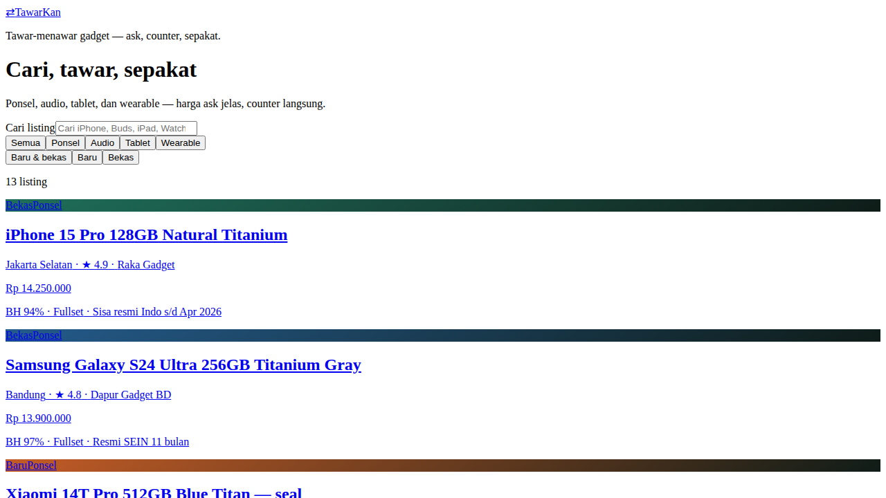
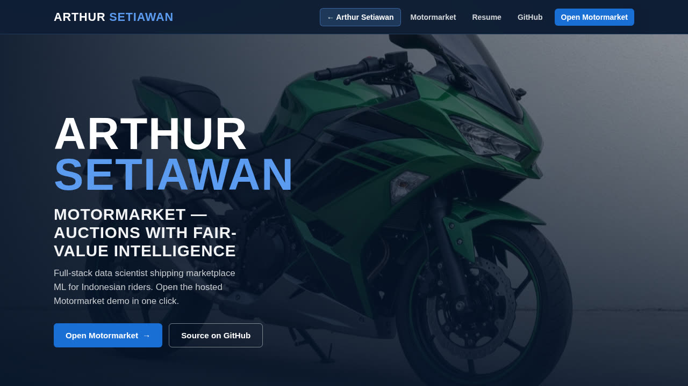
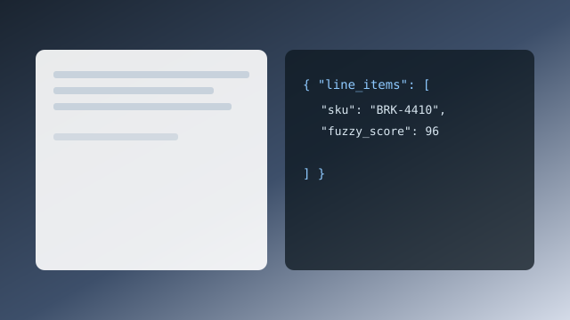

Open Tawarkan live demoTawarkan
Interactive marketplace bargaining and bidding engine exploring pricing thresholds and transaction elasticity.
Data Scientist · PACCAR Parts
Production machine learning for automotive parts — pricing, forecasting, and dealer analytics from validation through deployment, monitoring, and years in production.
Seattle · Los Angeles · Remote | Work authorized (H-1B transfer ready)
Six personal and showcase builds — marketplaces, recommendation, and open MLOps demos with repositories and live experiences where published.

Open Tawarkan live demoInteractive marketplace bargaining and bidding engine exploring pricing thresholds and transaction elasticity.

Open MotorMarket live demoAutomotive enthusiast marketplace and multi-factor auction and bidding platform.

Multi-attribute automotive recommendation engine matching drivers to vehicles based on operational, lifestyle, and performance criteria.
Synthetic MLOps lab for parts-style dynamic pricing: FastAPI serving, clamped elasticity guardrails, Dockerized CI, and reproducible training data on open samples.
MLOps FastAPI Docker CI/CD Python

Applied GenAI pipeline for messy quote documents with rapidfuzz reconciliation and a Streamlit demo on synthetic open inputs.
GenAI Streamlit rapidfuzz NLP Python
Personal automotive discovery and next-car companion for everyday search, comparison, and shortlist UX.
Recommendation Automotive UX Python
Production machine learning in automotive parts — pricing, forecasting, stocking, and dealer analytics — with ownership from validation through deployment, monitoring, and long-run maintenance.
Models that sales and planning teams can trust in daily workflows
Recommendations that stay operable at production scale
Insights surfaced where field teams already work
Reliability matters as much as the model score